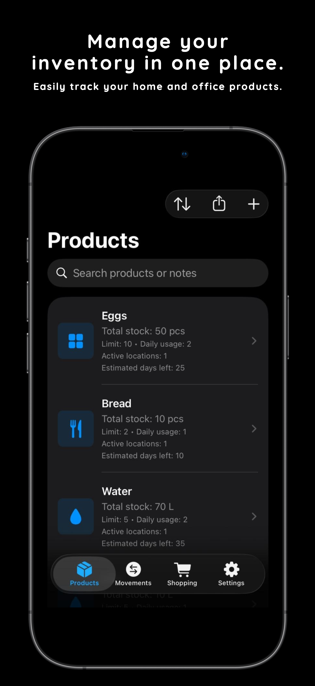
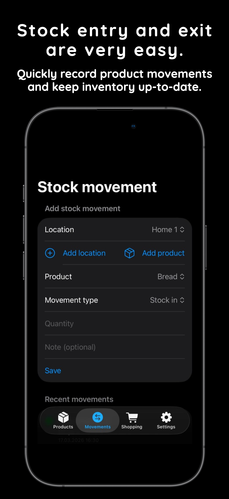
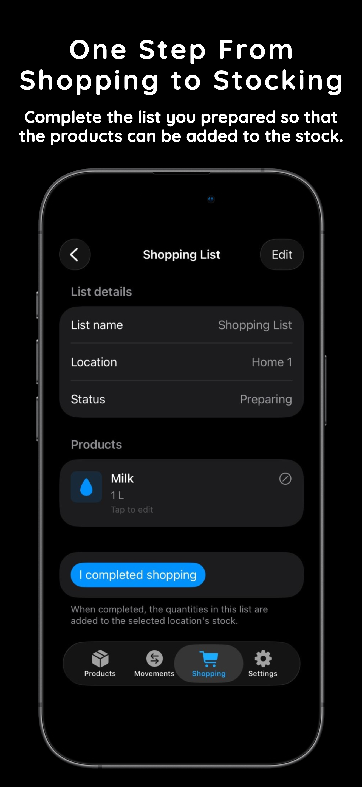
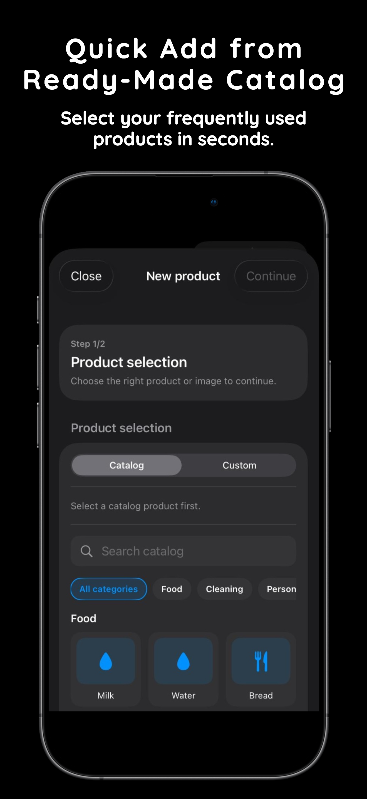
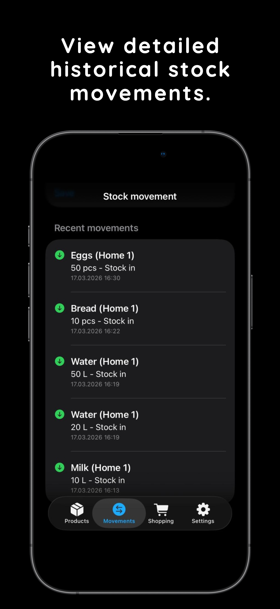

warehouse
See one product across every location.
Open a product and review total stock, active locations, remaining days, and recent movements together.
Keep in Stock helps you add products from a ready-made catalog, save first stock fast, follow totals by location, and restock from shopping lists with fully local data.
Catalog-first
Start from common products and save first stock in one flow.
Low-stock alerts
Use daily usage to estimate remaining days and notify locally.
100% local
No accounts, no analytics, and no cloud storage built in.



Why it matters
Pick a product, set its first quantity, log movements, and turn finished shopping lists straight into stock.
Keep in Stock focuses on the actions that matter most: adding products quickly, keeping totals accurate, and restocking without friction.
Open a product and review total stock, active locations, remaining days, and recent movements together.
Start from common items, set daily usage, and save the first quantity and location in the same flow.
Keep movement history tidy with product, location, quantity, and notes so totals always stay grounded in real events.
Complete a prepared shopping list and let purchased quantities flow into the selected location automatically.
Estimate remaining days from daily decrease values and receive reminders locally on your device when the stock needs attention.
Local notifications
Alerts are generated on-device from the inventory rules you define.
Historical movements
Review recent entries and exits to understand how the stock changes over time.
Privacy by default
Your lists, locations, and product history stay on your device unless you choose otherwise.
The app keeps the loop short so inventory management stays practical enough for real daily use.

Choose familiar products quickly, then set limits and locations that match your own storage setup.
Record stock in or stock out with the right quantity and location to keep every count up to date.
Use prepared shopping lists and convert the finished purchase into stock for the selected location.
Switch language from the header and the website will swap both content and screenshots to match.
Inventory overview
Catalog quick add
Movement entry

History view
Shopping to stock
The short answers on privacy, notifications, locations, and offline use.
Next step
Keep in Stock is prepared for a bilingual launch page today, and the App Store link can be dropped in whenever you are ready to publish.